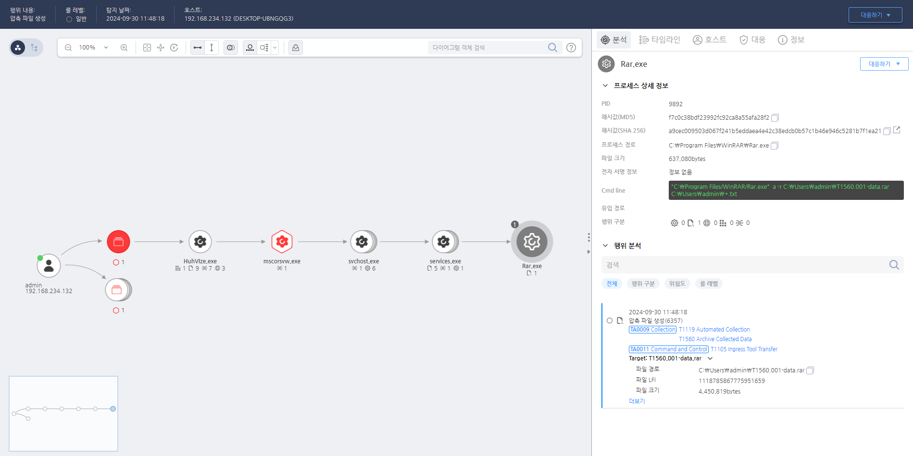

T1560.001.01 유틸리티를 통한 파일 압축
D3FEND
MITRE ATT&CK 액션을 기준으로 대응 방안을 작성
Detection
압축 형식의 파일 생성 행위를 탐지합니다.
Detection(EDR)

Response
아카이브 파일이 외부로 전송되지 않도록 차단 조치를 취하고, 네트워크 트래픽 및 로그를 분석하여 추가적인 악성 활동을 추적합니다.
Mitigations
압축 파일 검사 및 필터링 (M1035 - Application Layer Filtering)
- 압축 파일을 실시간으로 검사하여 악성코드나 민감한 정보가 포함되지 않도록 필터링
- 보안 소프트웨어와 파일 검사 도구를 사용하여 압축 파일 내의 암호화된 자격 증명이나 불법적인 콘텐츠를 탐지
- 압축 파일 열기 전에 검사를 강화하여 자동화된 분석 시스템을 활용, 압축된 파일 내 악성 코드나 스크립트를 사전에 제거
압축 파일 암호화 (M1031 - Network Segmentation)
- 압축 파일에 민감한 정보를 저장할 때는 강력한 암호화를 적용하여 데이터가 유출되더라도 암호화된 파일을 통해 접근할 수 없도록 설정
- 압축 파일의 암호화 및 파일 시스템에 대한 액세스 제어를 강화하여 암호화되지 않은 상태에서 파일을 열지 않도록 관리
- 비밀번호나 암호화 키는 별도로 보안된 시스템에서 관리하고, 압축 파일에 암호를 포함시키지 않도록 한다.
압축 파일 저장 위치 제어 및 액세스 제어 (M1045 - Restrict Access to Tools)
- 압축 파일을 저장하는 위치에 대한 엄격한 액세스 제어를 설정하여 불필요한 접근을 방지
- 민감한 데이터가 포함된 압축 파일은 암호화된 디스크나 보안 네트워크 공유에만 저장하여 접근을 제한
- 파일 권한을 최소화하고 최소 권한 원칙을 준수하여 불필요한 사용자가 파일에 접근할 수 없도록 설정
압축 파일 전송 시 보안 프로토콜 사용 (M1055 - Secure Data Transmission)
- 압축 파일 전송 시 안전한 프로토콜(예: SFTP, HTTPS)을 사용하여 파일 전송 중에 데이터 유출이나 변조를 방지
- 파일 전송 암호화와 전송 경로 보호를 통해 압축 파일이 인터넷을 통한 전송 시에도 무단 접근을 방지
- 전송된 압축 파일이 암호화되어 있지 않다면 자동으로 보안 알림을 발생시키는 알림 시스템을 설정
압축 파일 접근 로그 및 모니터링 (M1033 - Process Monitoring)
- 압축 파일에 대한 접근 로그를 설정하여 누가, 언제, 어디서 압축 파일에 접근했는지 추적할 수 있도록
- 파일 접근 및 수정에 대한 모니터링을 통해 압축 파일에 대한 비정상적인 활동을 탐지하고 경고
- 파일 시스템 감사 및 로그 분석을 통해 압축 파일의 이상 징후나 변경된 시간 등을 확인하여 보안 위협을 사전에 차단
Affected Techniques
Action 실행시 함꼐 영향을 받는 다른 Techniqes
| D3FEND |
| D3-PLA Process Lineage Analysis |